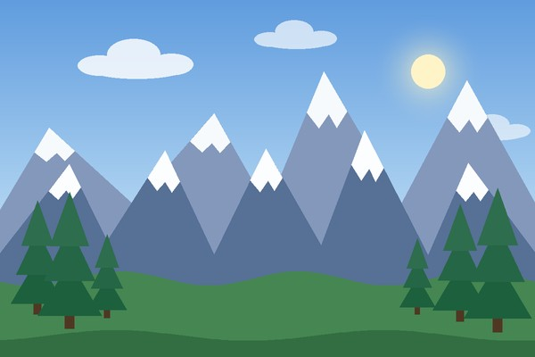
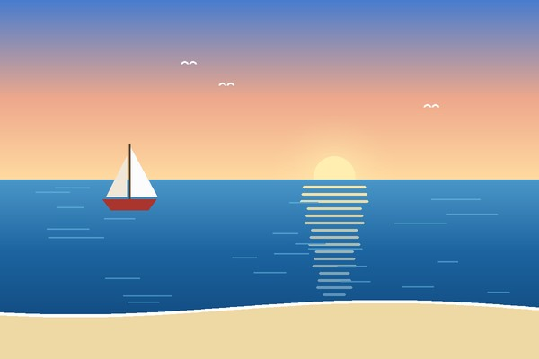

Учебный сайт о местах для отдыха и самостоятельных поездках по России.

В горах можно:

Что сделать перед поездкой к морю:
Нажмите на миниатюру в таблице, чтобы открыть большое изображение 600×400 в новой вкладке.
| Направление | Чем заняться | Фото | Подробнее |
|---|---|---|---|
| Горы | Походы, фотографии | Кавказ (Википедия) | |
| Море | Пляж, прогулки по берегу | Чёрное море (Википедия) | |
| Город | Музеи, архитектура |  |
Маршруты на этом сайте |
Автор сайта: Акопян Анастас, группа БИСТР252.